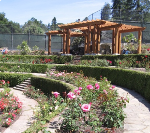
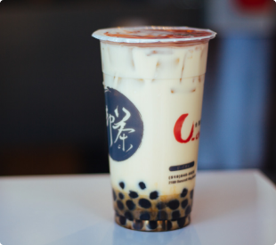
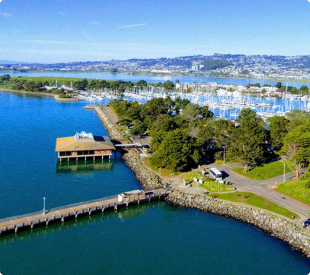
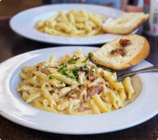

Popular among students, this tree-shaded cafe provides a kick with coffe drinks, teas, and pastries
See details

Berkeley Rose Garden
Nature
North Berkeley
The Berkeley Rose Garden is a city-owned park in the North Berkeley area of Berkeley, California. The Rose Garden is situated in a residential area of the Berkeley Hills between the Cragmont ...
See details

U-cha
Food
Downtown Berkeley
Chill counter in a simple modern storefront for iced & bubble tea drinks with creative snacks.
See details

Berkeley Marina
Nature
West Berkeley
The Berkeley Marina is the westernmost portion of the city of Berkeley, California, located west of the Eastshore Freeway at the foot of University Avenue on San Francisco Bay.
See details

Gypsy's Trattoria Italiana
Food
South Side
Fast-food outfit with late hours provides Italian comfort dishes to a student-heavy clientele.